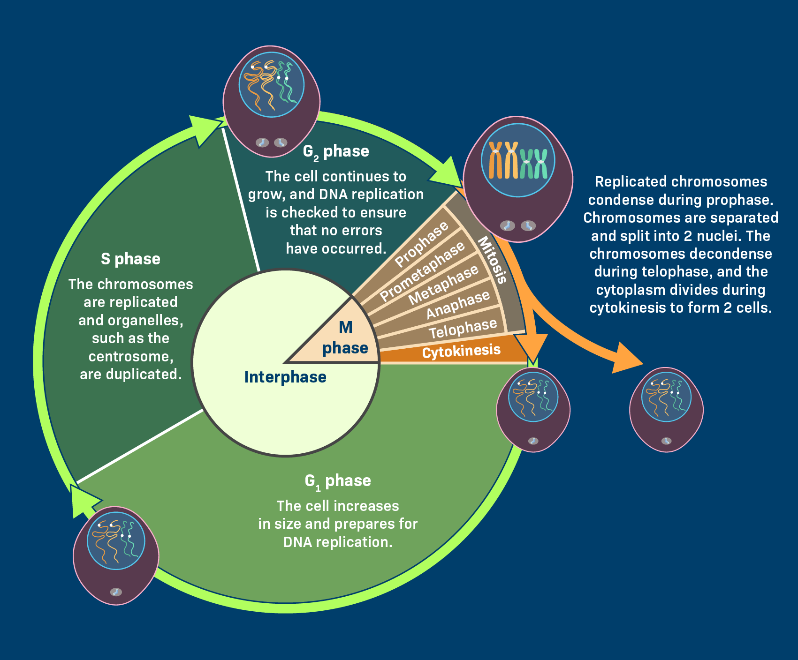
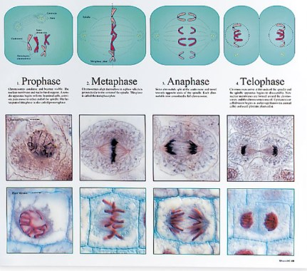
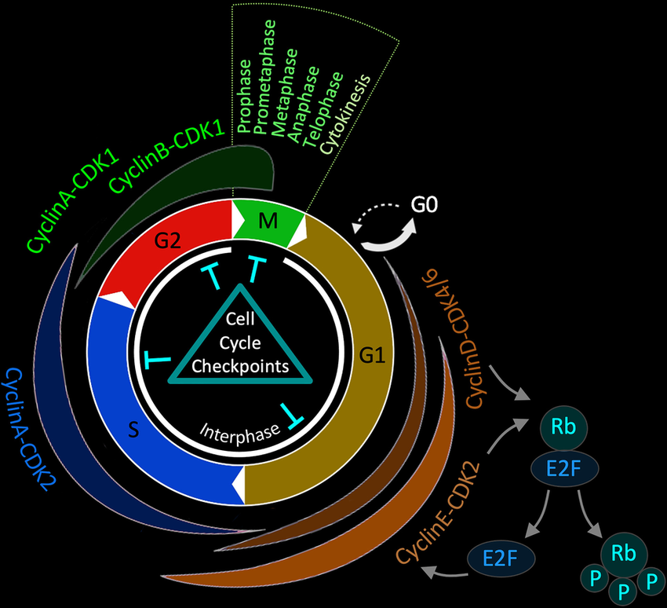

The Cell Cycle: Life's Fundamental Process
The cell cycle is the series of events that take place in a cell leading to its division and duplication of its DNA to produce two daughter cells. It's a fundamental process for all living organisms, essential for growth, repair, and reproduction.
Why is the Cell Cycle Important?
- Growth: Multicellular organisms grow by increasing the number of their cells through cell division.
- Repair and Replacement: Old or damaged cells are continuously replaced with new ones, ensuring tissue integrity and function.
- Reproduction: In single-celled organisms, cell division is how they reproduce. In multicellular organisms, specific cell divisions (meiosis) create reproductive cells.
Phases of the Cell Cycle
The cell cycle is typically divided into two main phases: Interphase and the Mitotic (M) Phase.
Interphase (Growth and DNA Replication)
Interphase is the longest part of the cell cycle, during which the cell grows and prepares for division. It consists of three sub-phases:
- G1 Phase (First Gap): This is a period of significant cell growth. The cell increases in size, synthesizes various proteins and enzymes, and produces new organelles (like mitochondria and ribosomes) that are needed for its normal function and for the upcoming DNA replication.
- S Phase (Synthesis): This is the crucial phase where DNA replication occurs. The cell duplicates its entire set of chromosomes, ensuring that each new daughter cell will receive a complete and identical copy of the genetic material. Each chromosome now consists of two identical sister chromatids.
- G2 Phase (Second Gap): The cell continues to grow and synthesizes more proteins, particularly those involved in cell division, such as microtubules. The cell also checks its duplicated chromosomes for errors and makes any necessary repairs, preparing for the precise and orderly separation of chromosomes in the M phase.

M Phase (Cell Division)
The M phase involves the actual division of the cell. It includes two major processes:
- Mitosis (Nuclear Division): The nucleus divides, ensuring that each new daughter cell receives an identical set of chromosomes. This process is crucial for growth, repair, and asexual reproduction. Mitosis itself is further divided into:
- Prophase: Chromosomes condense and become visible under a microscope. The nuclear envelope (the membrane surrounding the nucleus) begins to break down. The centrosomes (in animal cells), which organize microtubules, move to opposite poles of the cell and begin to form the mitotic spindle.
- Metaphase: The condensed chromosomes, each with its two sister chromatids, align precisely along the cell's equatorial plate (also called the metaphase plate). Each sister chromatid is attached to spindle fibers from opposite poles, ensuring accurate separation.
- Anaphase: The sister chromatids suddenly separate and are pulled apart by the shortening of the spindle fibers. They move toward opposite poles of the cell, effectively becoming individual chromosomes. The cell elongates.
- Telophase: The separated chromosomes arrive at the opposite poles of the cell and begin to decondense (unravel). New nuclear envelopes form around each set of chromosomes at the poles, creating two distinct nuclei within the single cell. The mitotic spindle disassembles.
- Cytokinesis (Cytoplasmic Division): This is the final step, where the cytoplasm of the cell divides, physically splitting the parent cell into two separate daughter cells. In animal cells, a contractile ring forms and pinches the cell in two, creating a "cleavage furrow." In plant cells, a new cell wall structure, called a "cell plate," forms in the middle of the cell and grows outwards until it divides the cell.

Mitosis vs. Meiosis: Both mitosis and meiosis involve similar stages of nuclear division (prophase, metaphase, anaphase, telophase). However, Mitosis produces two genetically identical diploid (2n) daughter cells after a single division, serving for growth and repair. In contrast, Meiosis is a specialized two-stage division (Meiosis I and Meiosis II). It is preceded by a single interphase (Interphase I) where DNA replicates. Because it has two stages, the phases are named accordingly (e.g., Prophase I, Metaphase I, Anaphase I, Telophase I for the first division, and Prophase II, etc., for the second division). Meiosis ultimately produces four genetically unique haploid (n) cells (gametes), specifically for sexual reproduction and to introduce genetic variation.
Cell Cycle Checkpoints
The cell cycle is tightly regulated by internal control mechanisms called **checkpoints**. These checkpoints ensure that the cell is ready to proceed to the next phase, preventing errors like incomplete DNA replication or chromosome segregation issues. If problems are detected, the cycle can be paused or even halted, leading to cell death (apoptosis) if the issues cannot be resolved.

Disruptions to the Cell Cycle
Proper regulation of the cell cycle is critical. When control mechanisms fail, cells may divide uncontrollably, leading to conditions like **cancer**. Many cancer treatments target different aspects of the cell cycle to stop or slow down uncontrolled cell division.
Understanding the cell cycle is key to comprehending how life grows, repairs itself, and perpetuates!
Written by Kasiban Parthipan